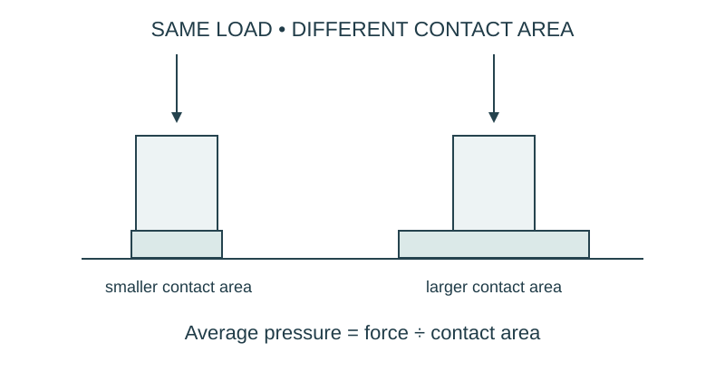

Job 17 · Spread the bearing load
A bearing-area comparison and improved paper support assembly.
110 minutes • Tape measure + pocket notebook • Name: __________________ Date: __________
Materials: Paper support columns with narrow and wide paper feet, soft scrap paper pads, small equal loads; balance or force meter optional.

Brief · 12 min
- The same load rests on a narrow or wide foot. What quantity connects load and contact area?
- Set up a dated notebook spread: sketch and readings on the left; calculation, decision, test, and revision on the right. Mark small sketches NTS unless drawn to a chosen scale.
- Work in pairs and rotate roles. Each student keeps an individual notebook and performs a tool action and a calculation.
Measure · 18 min
- Make two support feet with different measured contact areas: model sizes 1 ×1 in and 1 ×2 in.
- Keep load, column height, and pad material the same.
- Record whether load is known in newtons or only as a count of equal objects.
Plan · 20 min
- Calculate both paper foot areas; predict the relative average pressure under the same load.
- Draw load arrows from top to foot and label contact area.
- Plan a pad-mark or tilt comparison; acknowledge that visible deformation is a proxy rather than a pressure gauge.
Worked example
A supplied example load is 12 N on contact areas 2 cm² and 6 cm². Compare average pressure. Average pressure = force/contact area. 6 N/cm² versus 2 N/cm². Tripling area reduces this average pressure to one third for the same force.
Make · 28 min
- Test the two feet with the same small load over the desk.
- Record sinking, imprint, tilt, or lack of visible difference honestly.
- Build an improved support by changing foot area or connection; test again.
Test · 20 min
- Area calculations use square units.
- No newton value is invented from unknown object counts.
- Conclusion distinguishes the pressure model from the observed pad response.
Explain · 12 min
- Complete the individual exit below before discussing answers.
- Add the test result, revision, and notebook page reference to your response. Use the notebook as evidence rather than retyping every page.
- Save the three selected responses and submit the lesson for teacher review. Show your physical work and notebook to the teacher. Clean up and return shared supplies.
Individual exit
A supplied 20-N force acts over 5 cm². Find average pressure. What area gives 2 N/cm² under the same force?